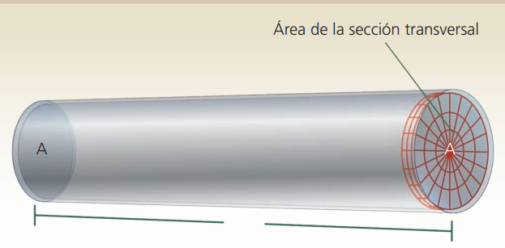
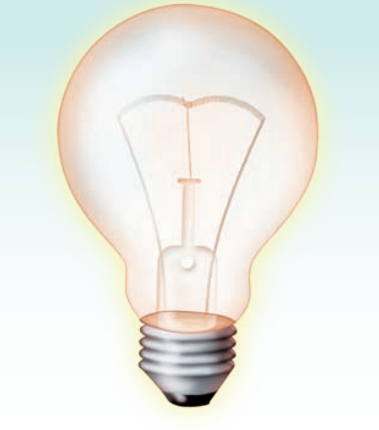
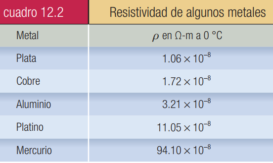
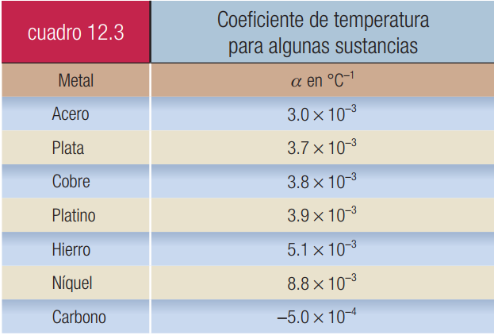

Conceptos generales
Cinemática
Dinámica
Electrostática
Electrodinámica
Termodinámica
Resistencia eléctricaTodos los materiales presentan cierta oposición al flujo de electrones o corriente eléctrica, pero unos obstruyen la circulación más que otros. Esto se debe a que en los átomos de algunos materiales los electrones externos son cedidos con relativa facilidad, disminuyendo la resistencia al paso de la corriente. Por definición, la resistencia eléctrica de un material es la oposición que presenta al paso de la corriente o flujo de electrones.
Como sabemos, la corriente eléctrica circula con relativa facilidad en los metales, por ello se utilizan en la construcción de circuitos para conducir la energía eléctrica y se denominan conductores.
En cambio, existen otros materiales, como el hule, la madera, el plástico, el vidrio, la porcelana, la seda y el corcho, que presentan gran dificultad para permitir el paso de la corriente, por eso reciben el nombre de aislantes o dieléctricos. Los alambres de conexión en los circuitos casi siempre están protegidos con hule o algún recubrimiento aislante plástico, a fin de evitar que la corriente pase de un alambre a otro al ponerse accidentalmente en contacto. Entre los materiales conductores y dieléctricos hay otro tipo de sustancias denominadas semiconductores, como el germanio y el silicio, contaminados con pequeñas impurezas de otros metales.
Existen varios factores que influyen en la resistencia eléctrica de un conductor.

Naturaleza del conductor
Si tomamos alambres de la misma longitud y sección transversal de los siguientes materiales: plata, cobre, aluminio y hierro, podemos verificar que la plata tiene una menor resistencia y que el hierro es el de mayor valor de los cuatro.
Longitud del conductor
A mayor longitud mayor resistencia. Si se duplica la longitud del alambre, también lo hace su resistencia.
Sección o área transversal
Al duplicarse la superficie de la sección transversal, se reduce la resistencia a la mitad.
Temperatura
En el caso de los metales su resistencia aumenta casi en forma directamente proporcional a su temperatura. Sin embargo, el carbón disminuye su resistencia al incrementarse la temperatura, porque la energía que produce la elevación de temperatura libera más electrones.

En los focos incandescentes existe un filamento que presenta una considerable resistencia al paso de la corriente eléctrica, por tanto, se calienta y se pone incandescente..
La resistencia que corresponde a cada material recibe el nombre de resistencia específica o resistividad (\(\rho\)). La resistividad de una sustancia a una determinada temperatura está definida como la resistencia de un alambre de dicha sustancia de 1 m de largo y de 1 m2 de sección transversal.
En el cuadro 12.2 se dan valores de resistividad para algunos metales. A medida que la resistividad de un alambre aumenta, disminuye su capacidad de conducir la corriente eléctrica. Por ello, la conductividad (\(\sigma\)) se emplea para especificar la capacidad de un material para conducir la corriente y se define como la inversa de la resistividad.
\(\displaystyle Conductividad=\frac{1}{Resistividad} \)
\(\displaystyle \sigma =\frac{1}{\rho } \)

La unidad empleada para medir la resistencia eléctrica es el ohm en honor al físico alemán George Simon Ohm. El ohm se escribe con la letra griega omega (\(\Omega\)).
En el Sistema lnternacional de Unidades, la unidad de resistencia es el volt/ampere, por tanto, un ohm es la relación entre estos últimos.
\(\displaystyle 1\,\Omega =\frac{1\,V}{1\,A} \)
La resistencia de un alambre conductor a una determinada temperatura es directamente proporcional a su longitud e inversamente proporcional al área de su sección transversal:
\(\displaystyle R=\rho \left(\frac{L}{A}\right) \)
Donde:
\(R\) = resistencia del conductor en ohms (\(\Omega\))
\(\rho\) = resistividad del material de que está hecho el conductor en (\(\Omega\cdot m\))
\(L\) = longitud del conductor en metros (\(m\))
\(A\) = área de la sección transversal del conductor en metros cuadrados (\(m^2\))
Ejemplo 1. Determinar la resistencia eléctrica de un alambre de cobre de 35 km de longitud y 0.6 mm2 de área en su sección transversal a 0° C.
Datos:
\(\rho = 1.72 \times 10^{-8} \, \Omega \cdot m\)
\(L = 35\, km = 3.5 \times 10^4 \,m\)
\(A = 0.6\, mm^2 = 6 \times 10^{-7} m^2\)
\(R = ?\)
Fórmula:
\(\displaystyle R=\rho \left(\frac{L}{A}\right) \)
Sustitución:
\(\displaystyle R=\left(1.72\times {10}^{-8}\,\Omega \cdot m\right)\left(\frac{3.5\,\times {10}^{4}\,m}{6\times {10}^{-7}\,{m}^{2}}\right) \)
\(\displaystyle R=\mathrm{1,003.3}\,\Omega \)
Variación de la resistencia eléctrica con la temperaturaExperimentalmente, se ha demostrado que cuando se desea calcular la resistencia \(R\) de un conductor a una cierta temperatura \(T\), si se conoce su resistencia \(R\) a una temperatura de 0 °C, se puede utilizar la expresión:
\(\displaystyle {R}_{T}={R}_{0}\left(1+\alpha \cdot T\right) \)
Donde:
\(R_T\) = resistencia del conductor en ohms (\(\Omega\)) a cierta temperatura \(T\)
\(R_0\) = resistencia del conductor en (\(\Omega\)) a 0 °C
\(T\) = temperatura del conductor en (°C)
\(\alpha\) = coeficiente de temperatura de la resistencia del material conductor en (°C-1). Indica la variación relativa de la resistencia del material por cada grado centígrado de incremento en su temperatura
En el caso de los metales, \(\alpha\) es mayor que cero, pues su resistencia aumenta con la temperatura. En cambio, para el carbono, silicio y germanio, el valor de \(\alpha\) es negativo, porque su resistencia eléctrica disminuye con la temperatura. Algunos valores del coeficiente de temperatura de la resistencia de algunas sustancias se proporcionan en el cuadro siguiente:

Una aplicación práctica de que la resistencia eléctrica de los metales varía con la temperatura se tiene en la construcción de termómetros de resistencia utilizados para medir altas temperaturas. Por ejemplo, en los de platino, la temperatura se puede determinar fácilmente, ya que se conoce la resistencia del alambre para diferentes temperaturas.
Otro fenómeno importante se observa cuando algunas sustancias alcanzan temperaturas muy bajas, casi iguales a 0° K (cero absoluto). A estas temperaturas la resistencia eléctrica de algunos metales prácticamente es cero, lo cual quiere decir que sus electrones libres se desplazan sin dificultad a través de su red cristalina, esto produce el fenómeno llamado superconductividad eléctrica. En estas condiciones, una vez que existe una corriente eléctrica por un superconductor, las pérdidas de energía producidas por la resistencia eléctrica, como el calentamiento del conductor (efecto Joule), serían nulas, por ello se aprovecharía íntegramente la energía eléctrica que producen los generadores. Sin embargo, la dificultad es mantener a los conductores a bajas temperaturas, motivo por el cual aún no tiene aplicación práctica a gran escala. Por ejemplo, el plomo se transforma en un superconductor a menos de 7.2° K.
Ejemplo 1. Un termómetro de platino tiene una resistencia de 7 Ω a 140 °C; calcular su resistencia a 300 °C.
Datos:
\(\alpha = 3.9 \times 10^{-3} \,°C^{-1}\)
\(R_{140°C} = 7\, \Omega\)
\(T = 300 °C\)
\(R_0 =\, ?\)
\(R_T = ?\)
Fórmula:
\(\displaystyle {R}_{T}={R}_{0}\left(1+\alpha \cdot T\right) \)
Solución:
Como desconocemos la resistencia del termómetro de platino a 0 °C, primero calculamos \(R_0\) de la siguiente manera:
\(\displaystyle {R}_{T}={R}_{0}\left(1+\alpha \cdot T\right) \)
\(\displaystyle {R}_{140°C}={R}_{0}\left(1+\alpha \cdot T\right) \)
Despejando \(R_0\) de la fórmula tenemos
\(\displaystyle {R}_{0}=\frac{{R}_{140°C}}{\left(1+\alpha \cdot T\right)} \)
\(\displaystyle {R}_{0}=\frac{7\,\Omega }{\left(1+\left(3.9\times {10}^{-3}\,\unicode{xb0} {C}^{-1}\right)\cdot \left(140\,\unicode{xb0} C\right)\right)}=4.53\,\Omega \)
Una vez conocida \(R_0\) determinamos \(R_T\) a 300 °C
\(\displaystyle {R}_{T}={R}_{0}\left(1+\alpha \cdot T\right) \)
\(\displaystyle {R}_{300°C}={R}_{0}\left(1+\alpha \cdot T\right) \)
\(\displaystyle {R}_{300°C}=\left(4.53\,\unicode{xb0} C\right)\left(1+\left(1.3\times {10}^{-3}\,\unicode{xb0} C\right)\left(300\,\unicode{xb0} C\right)\right)=9.83\,\Omega \)
\(\displaystyle {R}_{300°C}=9.83\,\Omega \)
Haz click en el siguiente enlace para ver tutoriales relacionados con el tema.